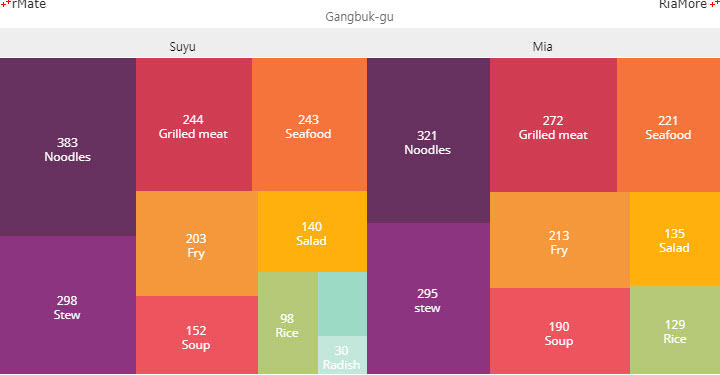
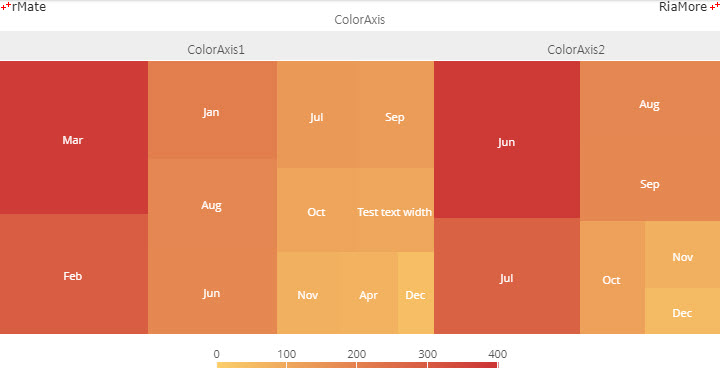

트리맵 차트
트리맵 차트는 계층 구조의 데이터를 표현하는데 적합한 차트로써 데이터의 상하 관계를 중첩된 사각형(nested rectangle) 형태로 표현합니다.
계층형 구조의 데이터를 표현하기 때문에 데이터도 이에 맞도록 구성되어 있어야 합니다.
다음은 강북구의 수유와 미아 지역 식당에서 중국 음식에 대한 점수를 트리맵 차트로 표현하기 위한 데이터의 예제입니다.
한 계층의 데이터는 이름(name)과 항목(items)의 쌍으로 이루어져 있고, 하위 계층의 데이터는 항목(items) 필드에 다시 이름(name)과 항목(items)의 쌍으로 정의됩니다.
var chartData = [{
"name":"Gangbuk-gu",
"items": [{
"name": "Suyu",
"items" : [
{"Food":"Radish", "Value":30},
{"Food":"Soup", "Value":152},
{"Food":"Seafood", "Value":243},
{"Food":"Stew", "Value":298},
{"Food":"Noodles", "Value":383},
{"Food":"Fry", "Value":203},
{"Food":"Rice", "Value":98},
{"Food":"Salad", "Value":140},
{"Food":"Grilled meat", "Value":244},
{"Food":"Say source", "Value":50}
]
},{
"name" : "Mia",
"items" : [
{"Food":"Noodles", "Value":321},
{"Food":"stew", "Value":295},
{"Food":"Grilled meat", "Value":272},
{"Food":"Seafood", "Value":221},
{"Food":"Fry", "Value":213},
{"Food":"Soup", "Value":190},
{"Food":"Salad", "Value":135},
{"Food":"Rice", "Value":129}
]
}]
}];
트리맵 차트는 <TreeMapChart> 노드의 series 속성값에 <TreeMapSeries> 노드를 설정하여 생성할 수 있습니다.
<TreeMapSeries> 노드에 설정되는 주요 속성은 다음과 같습니다.
| 속성명 |
유효값 (*: 기본값) |
설명 |
| groupField |
텍스트
|
계층형 데이터의 그룹 필드명을 지정합니다. |
| groupNameField |
텍스트
|
계층형 데이터의 그룹명을 지정합니다. |
| showGroupHeader |
true(*), false
|
계층형 데이터의 그룹 명을 차트에 표시할지 여부를 지정합니다. |
| nameField |
텍스트
|
데이터의 레이블이 저장된 필드명을 지정합니다. |
| weightField |
텍스트
|
사각형의 크기에 해당하는 데이터 값이 저장된 필드명을 지정합니다. |
다음은 위에서 설명된 데이터를 이용하여 트리맵 차트를 생성하는 코드와 이를 적용해서 출력한 차트의 예제입니다.
<TreeMapChart showDataTips="true" buttonMode="true" selectionMode="single">
<series>
<TreeMapSeries weightField="Value" nameField="Food" groupField="items" groupNameField="name" displayName="tree" showGroupHeader="true" color="#ffffff" labelPosition="inside" labelJsFunction="labelFunc" groupHeaderFontColor="#000000" fontSize="12">
<groupHeaderColor>
<SolidColor color="#eeeeee" />
</groupHeaderColor>
<showDataEffect>
<SeriesZoom relativeTo="chart" horizontalFocus="center" verticalFocus="middle" duration="1000"/>
</showDataEffect>
<fills>
<SolidColor color="#67315f"/>
<SolidColor color="#8c347f"/>
<SolidColor color="#d03d53"/>
<SolidColor color="#f5743c"/>
<SolidColor color="#f5983c"/>
<SolidColor color="#ed545f"/>
<SolidColor color="#ffb00d"/>
<SolidColor color="#b5c977"/>
<SolidColor color="#9ddac6"/>
<SolidColor color="#c2e7db"/>
</fills>
</TreeMapSeries>
</series>
</TreeMapChart>

See the CodePen 알메이트 차트 - 트리맵 차트
트리맵 차트에서 컬러축 표시
트리맵 차트에서 색과 데이터 값을 연관시켜 표현할 수 있습니다.
이는 컬러축을 이용함으로써 가능한데, 컬러축은 <TreeMapChart> 노드의 <colorAxis> 속성에 <ColorAxis> 노드를 정의하여 생성할 수 있습니다.
다음은 컬러축이 표현된 트리맵 차트를 생성하기 위한 코드와 이를 적용해서 출력한 차트의 예제입니다.
이 예제에서는 색의 범위를 colors 속성에 “[#fcd26b, #cc3635]” 으로 지정하였습니다.
최소값(minimum = “0”)의 색은 #fcd26b 이고, 최대값(maximum = “400”)의 색은 #cc3635 이며, 컬러축에는 100 (interval = “100”) 단위로 레이블이 표시됩니다.
사각형에 표시되는 색은 컬러축과 데이터 값이 연동되어 자동으로 표시됩니다.
<TreeMapChart dataTipDisplayMode="mouse" showDataTips="true" buttonMode="true" selectionMode="single" paddingBottom="10">
<colorAxis>
<ColorAxis id="colorAxis" maximum="400" minimum="0" interval="100" colors="[#fcd26b,#cc3635]"/>
</colorAxis>
<series>
<TreeMapSeries weightField="Value" showGroupHeader="true" groupField="items" displayName="tree" groupHeaderFontColor="#555555" groupNameField="name" color="#ffffff" nameField="Month" labelPosition="inside">
<groupHeaderColor>
<SolidColor color="#eeeeee"/>
</groupHeaderColor>
<showDataEffect>
<SeriesZoom relativeTo="chart" horizontalFocus="center" verticalFocus="middle" duration="1000"/>
</showDataEffect>
</TreeMapSeries>
</series>
</TreeMapChart>

See the CodePen 알메이트 차트 - 트리맵 차트에서 컬러축 표시